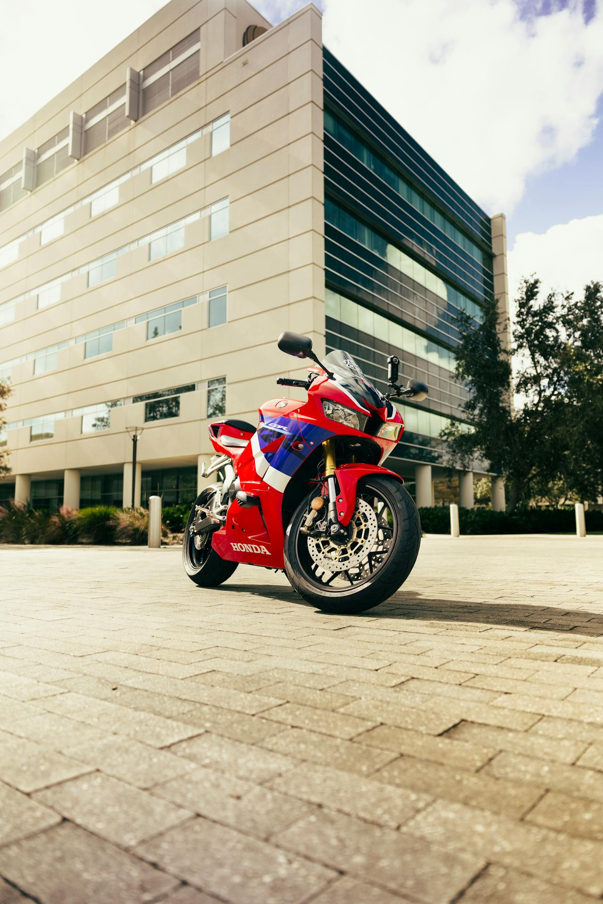
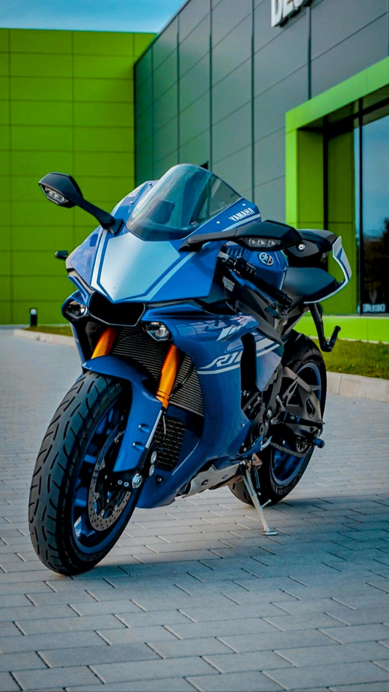
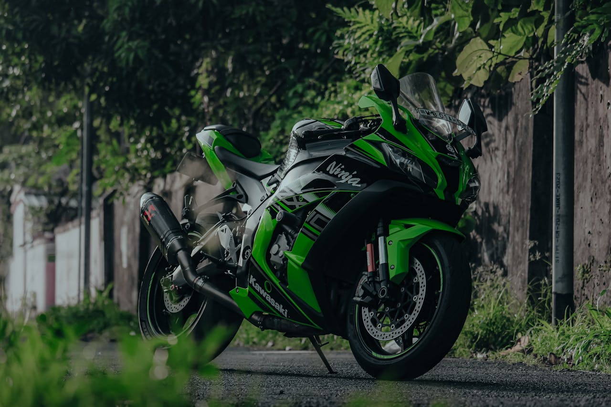
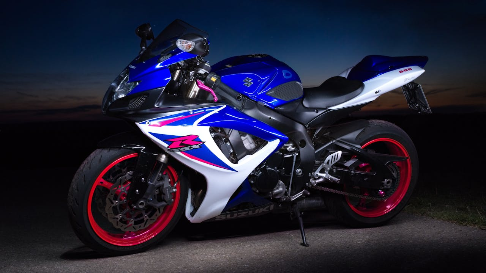
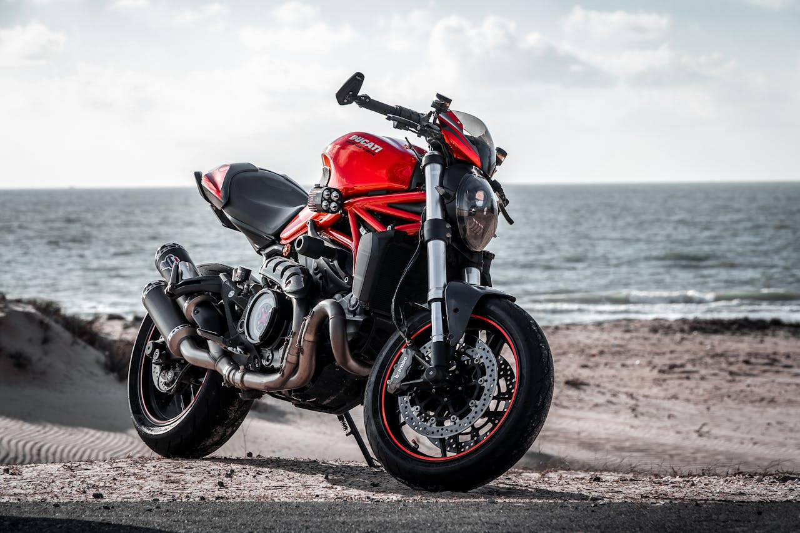

Motorsiklet dünyasını şekillendiren, tarihe geçmiş markalar.
Honda, Yamaha, Kawasaki ve Suzuki — dünyanın en çok satan markları.

Soichiro Honda tarafından kurulan marka, dünyanın en büyük motorsiklet üreticisidir. Yılda 20 milyonun üzerinde araç üretir. CB, CBR, Africa Twin ve Gold Wing gibi ikonik modellere sahiptir.

1955'te ilk motorsikletini üreten Yamaha, bugün spor, naked ve adventure kategorilerinde güçlü bir konuma sahiptir. YZF-R1 ve MT serisi dünya genelinde büyük ilgi görür.

Agresif ve güçlü motorsikletleriyle tanınan Kawasaki, yeşil rengi ve Ninja markasıyla dünyada tanınan bir kimlik oluşturmuştur. H2R ile 400 km/s rekorunu kırdı.

Güvenilirlik ve performansı uygun fiyatla sunan Suzuki, GSX-R serisiyle süperspor dünyasında devrim yaratmıştır. Hayabusa yıllarca dünyanın en hızlı üretim motorsikleti unvanını taşıdı.
Ducati, BMW, KTM ve Triumph — Avrupa'nın tutkuyla üretilen efsaneleri.

Bologna'da doğan Ducati, İtal